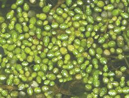
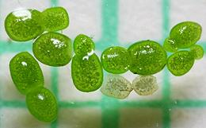

These plants are all tiny free floating individuals that live in slow moving fresh water environments, in tropical to temperate regions. They have evolved into very simple plants, discarding or greatly reducing most features of the other Arums. They do still have functional flowers, but while the Titan Arum has the largest bloom in the world, Duckweeds have the smallest flowers found in nature.
Duckweeds are of growing importance for human nutrition, botanical research, pharmaceutical production, animal feed, and waste water remediation - municipal, agricultural, and industrial.
The photo to the left shows Spirodela polyrhiza (large fronds - 1 cm / 0.39 inch), Lemna minor (medium fronds), and Wolffia arrhiza (very small fronds). Photo by Christian Fischer distributed under license Creative Commons Attribution Share-Alike v3.0 Unported, Attribution Required.
More on Arums.
This is the genus most of interest for human nutrition. While currently used as food mainly in Southeast Asia (Burma, Laos, Thailand), these plants are gaining a lot of attention in the West as a farmed product. They are very high in quality protein, higher than soybeans. They also yield fiber, and many other important nutrients. They grow so fast under ideal conditions that growing ponds must be harvested almost daily.
They are being processed as a food ingredient and supplement, and now (late 2019) have been found to be the first known significant plant source of bioavailable vitamin B12. While some other Duckweeds contain calcium oxalate, Wolfias do not. One grower in the US has self certified Duckweed as GRAS (Generally Regarded As Safe), and has received a "no objection" letter from the FDA.
The various species of Wolfia are all very similar in properties and usefulness. Which one is actually the smallest vascular flowering plant in the world is up for debate, but they are all of about the same size. We have given details of only two that are currently in cultivation in North America. Others of note are all very similar to these two. Wolffia angusta, W. australiana, W. borealis, W. brasiliensis, and W. columbiana are prominent examples.
Wolfia arrhiza [Spotless Watermeal, Rootless Duckweed; Khai-nam (Thai (lit "eggs of the water"); Wolfia arrhiza] This is the smallest vascular flowering plant in the world. Each green thallus in the photo is a whole mature independent plant, 1mm (0.039 inch) or less long. It has no roots, stems, or leaves, It's main means of reproduction is budding, but the minute flowers are functional and it can reproduce sexually as well. It produces energy both by photosynthesis, and by absorbing carbon from its environment. W. arrhiza is so prolific, growing ponds can be harvested every 3 to 4 days. It is a warm water plant, and if the water gets too cold, it sinks to the bottom of the pond and becomes a dormant starchy turion until the water is warmer. This is a very nutritious plant, and is used for food in Burma, Laos, and Thailand. Dried, it is 40% protein. The plant also provides important amino acids, as well as minerals, including calcium, magnesium, and zinc. Most unusually, it is a vegetable source for Vitamin B12, long thought to be mythical. W. arrhiza is also used for treatment of agricultural and
municipal waste water. In recirculating inland shrimp farms, it is used to
treat the outflow from the ponds. The plant can then be harvested and used
as feed for Chickens, Tilapia, and Carp.
Photo by Christian Fischer distributed under license
Creative Commons
Attribution Share-Alike v3.0 Unported, Attribution Required.
Wolfia globosa [Asian watermeal; Wolfia globosa] This Duckweed is very similar to Wolfia arrhiza in size and characteristics. Each green spheroid in the photo is a whole mature independent plant, most of which are now budding for reproduction. They are less than 1mm (0.039 inch) long. they have no roots, stems, or leaves. Their main means of reproduction is budding, but the minute flowers are functional and they can reproduce sexually as well. Cultivation and usage of W. globosa is also about the same as
W. arrhiza, and it has also been found to be a vegetable source for
Vitamin B12.
Photo by Andrey Zharkikh distributed under license
Creative Commons
Attribution Share-Alike v2.0 Generic.
|
This Duckweed is found in temperate and tropical regions of North, Central, and South America, Asia, and Central Europe. It is rarely found in Australia and not found in New Zealand. It consists of a disk up to 1 cm (0.39 inch) diameter with several short roots. It is green or reddish on the top side and dark red on the bottom side.
This Duckweed is not used directly as human food, because it tends to absorb toxic heavy metals (lead, aresnic, mercury), and there is the possibility of bacterial infection. It is used for waste water remediation in agricultural and industrial environments. If used for agricultural waste water, it is then harvested and used as feed for Poultry (including Ducks), and for Fish. It proved to reduce growth of Rainbow Trout, but increase growth of Tilapia. That used to remove toxic heavy metals from industrial waste cannot be fed to animals or used as a soil amendment. This plant is also considered excellent for Biofuel applications.
S. polyrhiza is a warm water plant, and if the water gets too
cold (7°C / 45°F) it sinks to the bottom of the pond and becomes a
dormant starchy turion until the water reaches 15°C / 59°F.
Photo by W. Bulach distributed under license Creative Commons
Attribution Share-Alike v4.0 International.
This duckweed is native to Africa, Asia, Europe, and North America, and has been introduced to Australia and South America. It is usually in the form of 1 to 3 leaves, each leaf having a root. The leaves may be up to 8 mm long and up to 5 mm wide (0.32 x 0.20 inch) and the roots up to 2 cm (0.79 inch) long. It mainly reproduces by the leaves separating and growing new attached leaves, but it also reproduces sexually by flowers and seeds. It's sticky roots cause birds to distribute it from pond to pond.
This Duckweed is not used directly as human food, because it tends to absorb toxic heavy metals. It is used for waste water remediation, particularly in agricultural environments. It is then harvested and used as feed for Poultry (including Ducks), and for Fish, or as soil amendment. That used to remove toxic heavy metals from industrial waste cannot be fed to animals or used in soil. This plant is also being seriously considered for Biofuel applications.
L. minor is a warm water plant, and if the water gets too cold
(7°C / 45°F) it sinks to the bottom of the pond and becomes a
dormant starchy turion until the water is warmer.
Photo by Barbarossa~commonswiki distributed under license
Creative Commons
Attribution Share-Alike v3.0 Unported, Attribution Required.